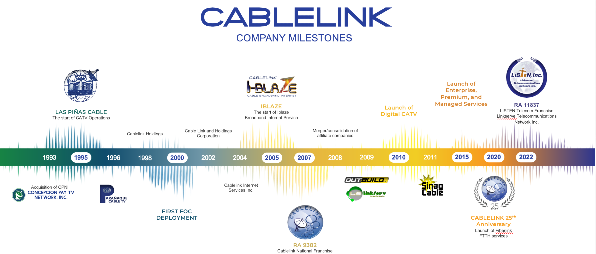

Our Mission
Quality services for the communities we serve.
To be a leader in providing quality products and services in the fields of communications, information technology, and entertainment to the communities we serve.
Cablelink is the registered trademark of Cable Link and Holdings Corporation, a 100% Filipino-owned corporation that oversees Cable Television and Broadband Cable Internet operations in Metro Manila.
Cablelink is the registered trademark of Cable Link and Holdings Corporation, a 100% Filipino-owned corporation that oversees the operation of Cable Television systems and Broadband Cable Internet in Metro Manila.
Cablelink is one of the fastest-growing Cable Television and Broadband Cable Internet service providers in the country. Its Cable Television operations in Metro Manila are handled by Cable Link & Holdings Corporation (CLHC), the surviving corporation in the merger of eight Cable TV companies in the major cities and municipalities of southern Metro Manila.
From Las Piñas City, where operations started in 1995, Cablelink expanded its network to Parañaque City, Muntinlupa City, Bacoor, Taguig, Imus, and Quezon City.
Explore the key developments in Cablelink’s history.

To be a leader in providing quality products and services in the fields of communications, information technology, and entertainment to the communities we serve.
It is our commitment to reach and continuously serve urban and rural communities by providing quality products and services that meet the needs of our valued customers at an affordable rate.